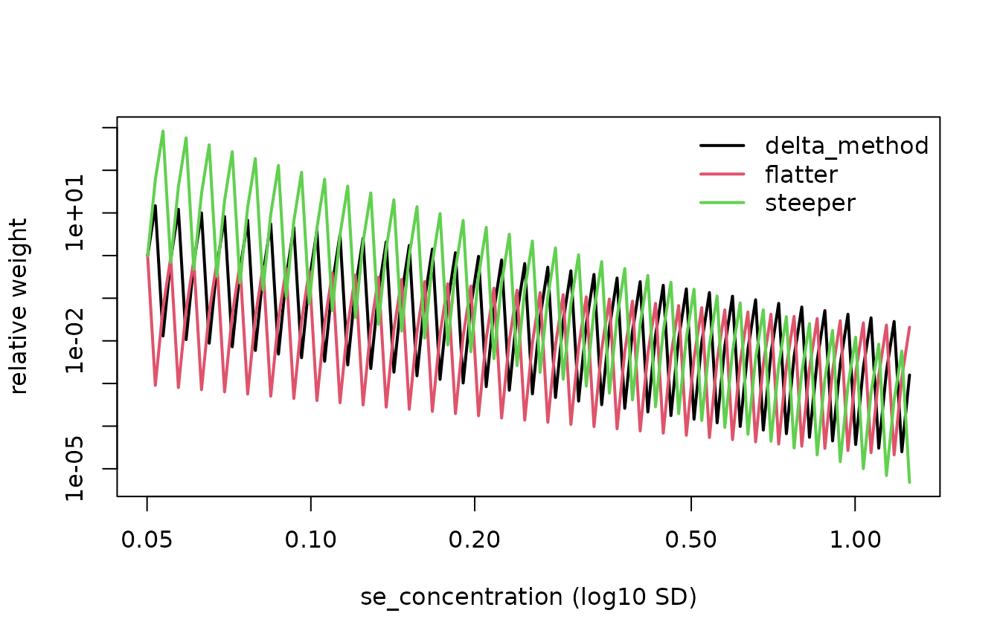

Ecosystem orientation
curveRcore is the shared foundation of the curveR
suite. It defines the data contract, preprocessing pipeline, forward
models, analytical inverses and gradients, the
calibration_result S3 class, and the eligibility-gating
logic used identically by every fitting engine.
The three packages in the suite are:
-
curveRcore (this package) — preprocessing,
model functions, inverses, gradients, the
calibration_resultclass, eligibility gating, detection limits, and tidy extractors. -
curveRfreq — frequentist NLS calibration via
fit_calibration_freq()andfit_calibration_freq_multiplate(). - curveRbayes — Bayesian calibration via Stan.
A fourth package, curveRweights, sits downstream of the fits: it turns each sample’s reported precision into observation weights for comparison analyses. This vignette introduces it, and the censoring labels the fits produce for out-of-range samples, in the two sections before the Summary.
Both fitting engines return the same calibration_result
object, so all downstream code — plots, extractors, detection-limit
functions — works identically regardless of which engine produced the
result.
For a complete end-to-end frequentist workflow, including the NLS
algorithm, multi-start fitting, and sample back-calculation, see
vignette("frequentist-quickstart", package = "curveRfreq").
This vignette covers the curveRcore layer that both
engines share.
Example datasets
curveRcore ships two synthetic multi-plate datasets that mirror the structure expected by the fitting pipeline. Both are named lists with the same six elements:
| Element | Description |
|---|---|
standards |
Standard curve wells, one row per well. |
blanks |
Blank well measurements (4 per plate). |
samples |
Patient samples with dilution and response columns. |
curve_id_lookup |
Maps integer curve_id to antigen / plate metadata. |
response_var |
Name of the response column ("mfi" or
"od"). |
indep_var |
Name of the concentration column
("concentration"). |
bead_assay_example — Luminex / bead-based
immunoassay
Spans two antigens (alpha and
beta) × three replicate plates, giving six
curve_id values (1–6). The alpha curves were
simulated with a Gompertz model; the beta curves with a 5PL
model.
data(bead_assay_example, package = "curveRcore")
str(bead_assay_example, max.level = 1)
#> List of 6
#> $ standards :'data.frame': 60 obs. of 8 variables:
#> $ blanks :'data.frame': 24 obs. of 7 variables:
#> $ samples :'data.frame': 120 obs. of 13 variables:
#> $ curve_id_lookup:'data.frame': 6 obs. of 5 variables:
#> $ response_var : chr "mfi"
#> $ indep_var : chr "concentration"
head(bead_assay_example$standards)
#> curve_id stype sampleid well dilution mfi assay_response_variable
#> 1 1 S STD_01 A1 1000.000000 109.4 mfi
#> 2 1 S STD_02 B1 333.333333 316.9 mfi
#> 3 1 S STD_03 C1 100.000000 1133.0 mfi
#> 4 1 S STD_04 D1 33.333333 4156.1 mfi
#> 5 1 S STD_05 E1 10.000000 12458.1 mfi
#> 6 1 S STD_06 F1 3.333333 18933.4 mfi
#> assay_independent_variable
#> 1 concentration
#> 2 concentration
#> 3 concentration
#> 4 concentration
#> 5 concentration
#> 6 concentration
elisa_assay_example — ELISA / optical density
Spans one analyte across six
plates. Plates 1–3 were simulated with a 5PL model; plates 4–6
with Gompertz, reflecting realistic between-plate shape variation. The
response column is "od".
data(elisa_assay_example, package = "curveRcore")
str(elisa_assay_example, max.level = 1)
#> List of 6
#> $ standards :'data.frame': 60 obs. of 8 variables:
#> $ blanks :'data.frame': 24 obs. of 7 variables:
#> $ samples :'data.frame': 120 obs. of 12 variables:
#> $ curve_id_lookup:'data.frame': 6 obs. of 5 variables:
#> $ response_var : chr "od"
#> $ indep_var : chr "concentration"The five forward models
All five canonical model functions live in curveRcore. They share a consistent parameter naming convention across the entire suite:
| Parameter | Role |
|---|---|
a |
Lower asymptote (baseline response); a < d
|
b |
Scale / steepness parameter; b > 0
|
c |
Inflection-point location on the x-axis |
d |
Upper asymptote (saturation response); d > a
|
g |
Asymmetry parameter (5-parameter models only);
g > 0
|
x |
Independent variable — typically log₁₀(concentration) |
The x pre-transformation (e.g. log₁₀) is applied
upstream by preprocess_standards(); the model functions
themselves are scale-agnostic.
logistic5 — 5PL (asymmetric sigmoid)
Reduces to logistic4 when
.
Values
skew toward the upper asymptote;
skew toward the lower asymptote.
gompertz4 — Gompertz (intrinsically asymmetric)
Asymmetric without requiring a fifth parameter — skewed toward the upper asymptote. Often the best fit for Luminex data.
loglogistic4 and loglogistic5
Classical Hill-equation parameterisations requiring
(i.e. concentration on the natural scale, not log₁₀-transformed). When
is_log_independent = TRUE, loglogistic4 is
algebraically equivalent to logistic4 and is silently
dropped by the fitting engines to avoid redundancy.
# List all recognised model names
available_models()
#> [1] "logistic4" "loglogistic4" "gompertz4" "logistic5" "loglogistic5"Preprocessing with preprocess_standards()
Neither curveRfreq nor curveRbayes preprocess data.
All transforms must be applied upstream via
curveRcore::preprocess_standards(). This clean separation
ensures both fitting engines receive data on an identical scale, making
their results directly comparable.
preprocess_standards() applies four steps in order:
-
compute_concentration()— converts thedilutioncolumn to absolute concentration using the undiluted standard concentration; optionally log₁₀-transforms the result. -
correct_prozone()— dampens the hook effect at high concentrations by compressing post-peak signal toward the peak. -
perform_blank_operation()— applies one of five blank strategies:"ignored"(default),"included"(append geometric mean as an extra point),"subtracted","subtracted_3x", or"subtracted_10x". -
compute_log_response()— applieslog10()to the response. Values ≤ 0 are floored to 1 % of the minimum positive value among the included points before transformation.
Key contract: After
preprocess_standards(), the column named byindependent_variableholds log₁₀ concentration and the response column holds log₁₀ response. These are the scales the fitting engines expect.
std_raw <- bead_assay_example$standards
blank_raw <- bead_assay_example$blanks
# Preprocess one curve at a time, then stack
std_preprocessed <- do.call(rbind, lapply(
split(std_raw, std_raw$curve_id),
function(df) {
cid <- df$curve_id[1]
blanks_for_curve <- blank_raw[blank_raw$curve_id == cid, ]
result <- preprocess_standards(
data = df,
antigen_settings = list(standard_curve_concentration = 30),
response_variable = "mfi",
independent_variable = "concentration",
is_log_response = TRUE,
blank_data = blanks_for_curve,
blank_option = "subtracted",
is_log_independent = TRUE,
apply_prozone = TRUE
)
result$data
}
))
# Both columns are now on the log10 scale
head(std_preprocessed[, c("curve_id", "concentration", "mfi")])
#> curve_id concentration mfi
#> 1.1 1 -1.52287875 1.964654
#> 1.2 1 -1.04575749 2.476663
#> 1.3 1 -0.52287875 3.047580
#> 1.4 1 -0.04575749 3.616883
#> 1.5 1 0.47712125 4.094851
#> 1.6 1 0.95424251 4.276834Mask-aware preprocessing
preprocess_standards() understands an optional
include_col (default "included"): a logical
column marking which rows entered the fit (TRUE) versus
which were masked out (FALSE). The rule is simple and
strict:
Statistics from the included points; transforms applied to every row. The prozone peak, the blank geometric mean, the adaptive log floor, and the minimum-concentration anchor are all computed from the included rows only. The resulting transforms are then applied to all rows, so masked points land on exactly the same axes as the fitted points without ever influencing them.
Masked rows are never dropped — they are transformed and returned so that downstream code (e.g. an app overlaying the observed points on the fitted curve) can plot them on the same axes and colour them by status. If the column is absent, every row is treated as included and the output is identical to the column-free behaviour. Fitting engines are expected to receive only the included subset:
pp <- preprocess_standards(std_with_included, antigen_settings = list(...),
response_variable = "mfi",
independent_variable = "concentration",
is_log_response = TRUE, include_col = "included")
# Feed the fitter the included rows only — the fit is identical to one that
# never saw the masked rows:
fit_input <- pp$data[pp$data$included, ]The return shape
preprocess_standards() returns a named list:
| Element | Contents |
|---|---|
data |
All standard rows, transformed, carrying included, the
log₁₀ concentration, the model-space response, and a
pristine assay_response_raw. |
blanks |
All blank rows, transformed onto the standards’ response
floor, with included and assay_response_raw;
NULL when no blanks were supplied. |
antigen_fit_options |
Record of the options used (is_log_response,
blank_option, is_log_concentration,
apply_prozone). |
derived_stats |
The set-level statistics computed from the included points:
blank_geomean, prozone_peak_response,
prozone_logc_at_peak, response_floor,
min_included_concentration. |
The two frames and the raw/model-space response columns are exactly
what the batch worker persists into the calib_standards /
calib_blanks tables (one row per observed well, tagged with
included and an exclusion_reason), so a
consumer can reconstruct the observed curve with perfect fidelity
without re-deriving any transform.
Note that blanks are never subtracted automatically.
Under the default blank_option = "ignored" the standard
responses are left as-is and the returned blanks are transformed for
display only. Only the explicit "subtracted",
"subtracted_3x", and "subtracted_10x" options
subtract the included-blank geometric mean from the standards;
"included" adds it as an extra low-concentration point.
Adaptive constraint profile
adaptive_constraint_profile() is called internally
before fitting to classify the assay signal into one of three scale
classes and derive appropriate parameter bounds for the NLS or prior
specification:
| Scale class | Criterion (log₁₀ response) | Typical assay |
|---|---|---|
"high" |
max > 2.5 | Luminex / bead-based |
"medium" |
max > 0.5 | Mid-range ELISA |
"low" |
max ≤ 0.5 | Absorbance / OD |
The scale class drives bound widths for b (slope) and
g (asymmetry), and how far beyond the data range the
inflection point c is allowed to roam. Calling this
function directly is not usually necessary, but it is exported for
custom constraint workflows.
The calibration_result object
Every fitting function in the curveR suite returns a single S3 object
of class calibration_result. The structure is defined here
in curveRcore; the fitting engines populate it.
# After fitting (e.g. via curveRfreq):
print(cr) # concise summary
summary(cr) # model selection table + best-model parametersThe object is a named list with six top-level components:
cr
├── $meta
├── $ensemble
├── $selection
├── $grid
├── $samples
└── $detection_limits
$meta — Provenance and fit configuration
$meta is a named list that records everything needed to
reproduce or audit the fit. It is populated at construction time and
never modified afterwards.
| Field | Type | Description |
|---|---|---|
method |
character |
"frequentist" or "bayesian"
|
package |
character | Fitting package that produced the result |
version |
character | Package version string |
curve_id |
character | Unique identifier for this plate/antigen combination |
response_var |
character | Column used as the assay response |
independent_var |
character | Column used as the independent variable |
is_log_response |
logical | Whether the response was log₁₀-transformed before fitting |
is_log_independent |
logical | Whether concentration was log₁₀-transformed before fitting |
timestamp |
POSIXct | When the object was created |
Additional fields such as antigen, plate,
n_standards, n_samples, and
pcov_threshold may be present depending on the calling
package.
cr$meta$method # "frequentist"
cr$meta$curve_id # e.g. "plate1_antigen_A"
cr$meta$is_log_response # TRUE
$ensemble — All models that were attempted
$ensemble is a named list with one entry per model that
was fitted, keyed by model name (e.g. "logistic4",
"gompertz4"). Even models that failed to converge have an
entry, which is important for diagnosing why a preferred model was not
selected.
Each entry contains:
| Field | Type | Description |
|---|---|---|
model_name |
character | One of the five canonical model names |
converged |
logical | Whether the optimizer reached a solution |
parameters |
data frame | Parameter estimates with uncertainty (see below) |
fit_stats |
named list | Goodness-of-fit statistics |
eligibility |
named list | Output of assess_model_eligibility() for this
model |
grid |
data frame | Per-model precision profile (populated for every converged model) |
raw_fit |
object | The raw fit object from nlsLM() or Stan (optional) |
The parameters data frame columns differ slightly by
framework:
| Framework | Columns |
|---|---|
| Frequentist |
term, estimate, std_error,
statistic, p.value
|
| Bayesian |
term, mean, sd,
q2.5, q50, q97.5
|
The fit_stats list contains aic,
bic, rmse, r_squared, and
n_obs for frequentist fits, and loo_elpd,
loo_se, waic for Bayesian fits.
Design note: Precision grids are computed for every converged model, not just the selected one. This means
ensemble[[model]]$gridis available for the runner-up and can be inspected directly (see Section 6 below). The top-level$gridis simply a pointer to the best-model’s grid — no recomputation occurs.
# Check convergence across all models
sapply(cr$ensemble, `[[`, "converged")
# Inspect a specific model
cr$ensemble[["logistic4"]]$converged
cr$ensemble[["logistic4"]]$parameters
cr$ensemble[["logistic4"]]$fit_stats
$selection — Best model choice and eligibility
record
$selection records the outcome of the two-stage
selection process: eligibility gating followed by information-criterion
ranking. It provides full transparency about which models were
considered and why the winner was chosen.
| Field | Type | Description |
|---|---|---|
best_model_name |
character | Name of the selected model, or NA if none
converged |
criterion |
character | Selection criterion used, e.g. "AIC+eligibility"
|
fallback |
logical |
TRUE if no model passed all eligibility gates |
fallback_reason |
character | Human-readable explanation of any gate failures |
eligible_models |
character vector | Names of all models that passed eligibility gating |
assessments |
named list | Full assess_model_eligibility() output for every
model |
weights |
data frame | AIC (or LOO) comparison table across all models |
aic_best |
character | Model that would have won by AIC alone (ignoring gates) |
When aic_best != best_model_name, the AIC winner was
demoted by a gate failure — a useful diagnostic for problem plates.
cr$selection$best_model_name # "gompertz4"
cr$selection$criterion # "AIC+eligibility"
cr$selection$fallback # FALSE
cr$selection$eligible_models # c("gompertz4", "logistic4")
cr$selection$aic_best # may differ from best_model_name
$grid — Precision profile of the best model
$grid is a data frame of evenly-spaced predictions from
the selected best model across the full fitted concentration range
(default 200 points, configurable via n_grid). It is the
primary input for plotting the calibration curve and for computing
quantification limits.
| Column | Description |
|---|---|
log10_concentration |
Concentration on the log₁₀ scale (x-axis) |
concentration |
Concentration on the natural scale |
x_fit |
The value passed to the model (equals
log10_concentration when
is_log_independent = TRUE) |
predicted_response |
Forward model prediction at each grid point (on the fitting scale) |
ci_lower, ci_upper
|
Delta-method 95 % CI on the response scale |
predicted_concentration |
Back-calculated concentration from the predicted response |
se_concentration |
Delta-method SD of back-calculated log₁₀ concentration (uncapped) |
pcov |
Percent CV derived from se_concentration, capped at
cv_x_max
|
pcov_rmse |
Relative RMSE (%) — includes bias of
predicted_concentration vs x_fit
|
pcov_pass |
Logical; whether pcov is below the acceptance
threshold |
d2y_dx2 |
Second derivative of log₁₀ response w.r.t. log₁₀ concentration (curvature) |
The relationship between se_concentration and
pcov is:
se_concentration is the uncapped, modelling-scale
quantity and is what downstream variance/weighting models
(e.g. curveRweights) should consume. pcov is
censored at cv_x_max and is intended for human-readable QC
only.
Use pcov_from_se() and se_from_pcov() — the
single canonical implementation of this conversion — rather than
reimplementing it:
# Convert a vector of se_concentration values to pcov
se_vals <- c(0.05, 0.08, 0.15)
pcov_from_se(se_vals) # → percent CV values
#> [1] 11.51293 18.42068 34.53878
# And back
se_from_pcov(pcov_from_se(se_vals)) # round-trips exactly
#> [1] 0.05 0.08 0.15
$samples — Back-calculated concentrations for test
samples
$samples is NULL if no test samples were
supplied to the fitting function. When samples are present it is a data
frame with one row per sample replicate:
| Column | Description |
|---|---|
sampleid |
Sample identifier (carried through from input) |
curve_id |
Plate/antigen identifier |
raw_assay_response |
Original response value before any transform |
observed_response_fit |
Response on the fitting scale |
predicted_log10_concentration |
Back-calculated concentration on the log₁₀ scale |
predicted_concentration |
Same as above when is_log_independent = TRUE
|
final_concentration |
Dilution-corrected concentration:
10^predicted_log10_concentration × dilution
|
se_concentration |
SD of predicted_log10_concentration (delta method, or
posterior SD) |
pcov |
Percent CV of the back-calculated concentration, capped at
cv_x_max
|
pcov_pass |
Logical; whether precision meets the acceptance threshold |
conc_q_lo, conc_q_med,
conc_q_hi
|
2.5 / 50 / 97.5 % predictive quantiles of the concentration, natural scale, dilution-corrected |
p_below_lloq, p_above_uloq
|
Probability the concentration is below the LLOQ / above the ULOQ |
p_below_cutoff |
Probability the dilution-corrected concentration is below
decision_cutoff (NA if none) |
frac_draws_below_a,
frac_draws_above_d
|
Share of draws whose response lay beyond the low / high asymptote |
See Out-of-range samples for how
these are computed and for the censoring columns added by
classify_censoring_multiplate(). The Censoring section below works through the classes
and the analysis options.
Any additional columns present in the original sample data (dilution, replicate number, patient ID, etc.) are carried through unchanged.
cr$samples[, c("sampleid", "final_concentration", "pcov", "pcov_pass")]
tidy_samples(cr) # same, with curve_id column attached
$detection_limits — LODs, MDC, and RDL
$detection_limits is NULL by default and is
populated by calling compute_detection_limits(), either
automatically inside the fitting pipeline or post-hoc:
cr <- compute_detection_limits(cr)The list has two sub-lists.
$lods — derived from the confidence
interval on the lower asymptote a and upper asymptote
d:
| Field | Description |
|---|---|
lower_lod_response |
Upper 97.5 % CI of a; response threshold defining the
lower LOD |
upper_lod_response |
Lower 2.5 % CI of d; response threshold defining the
upper LOD |
lower_lod_log10_conc |
Lower LOD mapped to log₁₀ concentration |
upper_lod_log10_conc |
Upper LOD mapped to log₁₀ concentration |
lower_lod_conc |
Lower LOD on the natural concentration scale |
upper_lod_conc |
Upper LOD on the natural concentration scale |
$mdc_rdl — minimum detectable
concentration and reliable detection limit, derived by inverting
CI-modified versions of the fitted curve:
| Field | Description |
|---|---|
mdc_lower_log10 / mdc_lower_conc
|
Lower MDC (log₁₀ and natural units) |
mdc_upper_log10 / mdc_upper_conc
|
Upper MDC |
rdl_lower_log10 / rdl_lower_conc
|
Lower RDL (conservative: compressed d) |
rdl_upper_log10 / rdl_upper_conc
|
Upper RDL (liberal: expanded d) |
cr$detection_limits$lods$lower_lod_conc
cr$detection_limits$lods$upper_lod_conc
cr$detection_limits$mdc_rdl$rdl_lower_concFor multiplate results, use the convenience wrapper:
mp <- compute_detection_limits_multiplate(mp)Out-of-range samples: censoring, intervals and threshold probabilities
pcov summarises a sample’s uncertainty as one symmetric
number on the log₁₀ scale. That cannot distinguish a sample
below the LLOQ — whose true concentration is bounded
between 0 and roughly the LLOQ — from one above the
ULOQ, which has no upper bound. Two pieces of output carry that missing
information.
Censoring.
classify_censoring_multiplate() (run after
compute_detection_limits_multiplate() and
classify_pcov_gates_multiplate()) adds:
| Column | Description |
|---|---|
censor_class |
quantified, lod_to_lloq,
below_lod, below_lloq (no LOD available),
above_uloq, saturated (response at/above the
upper LOD), no_response
|
censor_type |
none, left, interval,
right — the codes censored-data methods expect |
censor_lower, censor_upper
|
Bounds on the natural, dilution-corrected scale; NA =
unbounded |
The response scale is checked first, so a sample whose response lies beyond an asymptote — and therefore has no finite point estimate — is still assigned the right side.
Predictive draws. Each engine back-calculates every
sample many times (Bayesian: once per posterior draw; frequentist: once
per Monte Carlo draw from the fitted parameter distribution plus
residual noise). A draw whose response falls beyond that draw’s
asymptote is kept as censored (-Inf / +Inf on
the log₁₀ scale, via invert_with_bounds()) rather than
dropped, and summarize_conc_draws() turns the draws into
the quantile and probability columns in the table above. Because the
quantiles are computed on the log scale and back-transformed, the
interval is asymmetric on the natural scale, and a below-range sample
typically gets a tight upper bound and a lower bound of 0.
mp <- classify_censoring_multiplate(mp)
s <- tidy_samples(mp)
s[s$censor_class != "quantified",
c("sampleid", "censor_class", "censor_upper", "conc_q_hi", "p_below_lloq")]se_concentration and pcov are unchanged by
this — they are still computed from the invertible draws only.
frac_draws_below_a / frac_draws_above_d show
how many draws those legacy summaries leave out.
Eligibility gating
Why gates come before AIC
AIC and LOO-CV measure forward-fit quality — how well the model predicts the response values in the training data. They are completely blind to whether the fitted model can back-calculate concentration reliably. A model whose asymptote estimate is sitting on a constraint boundary, or whose covariance matrix is nearly singular, can have a lower AIC than a well-identified competitor purely by overfitting.
The eligibility gates intercept such models before AIC ranking. Only models that pass all applicable gates enter the ranking.
The four gates
All gates are evaluated by
assess_model_eligibility():
Gate 1 — at_bound (frequentist only)
Checks that no parameter estimate lies within bound_tol
(default 1e-4) of its lower or upper constraint bound. A
boundary solution means the optimiser could not find an interior minimum
— AIC asymptotics do not hold at the boundary.
Gate 2 — vcov_condition (frequentist
only)
Computes the condition number κ of vcov(fit). If κ ≥
1×10⁸, the covariance matrix is near-singular, making standard error
propagation unreliable.
Selection logic
After assessment, select_best_eligible() implements the
following decision tree:
eligible_models ← {models that passed all gates}
if length(eligible_models) > 0:
best ← eligible_models ranked by AIC (lowest) or LOO elpd (highest)
fallback ← FALSE
else: # fallback path
best ← model with widest dynamic_range_log10;
ties broken by AIC / LOO
fallback ← TRUE
fallback_reason ← per-model gate failure summaryThe fallback ensures a result is always returned. When
fallback = TRUE the selection is a best-effort choice and
should be treated with caution.
Reading the gate results
Each model’s eligibility report is stored in
ensemble[[model]]$eligibility. The $gates data
frame has columns gate, passed, and
detail:
for (nm in names(cr$ensemble)) {
elig <- cr$ensemble[[nm]]$eligibility
cat(sprintf("\n── %s (eligible = %s) ──\n", nm, elig$eligible))
print(elig$gates)
cat(sprintf(
" LLOQ = %.3f ULOQ = %.3f DR = %.3f log10\n",
elig$lloq, elig$uloq, elig$dynamic_range_log10
))
}── gompertz4 (eligible = TRUE) ──
gate passed detail
1 at_bound TRUE
2 vcov_condition TRUE
3 rel_se TRUE
4 dynamic_range TRUE dynamic range = 2.87 log10
LLOQ = -2.341 ULOQ = 0.531 DR = 2.872 log10
── logistic4 (eligible = FALSE) ──
gate passed detail
1 at_bound FALSE b at lower bound
2 vcov_condition TRUE
3 rel_se TRUE
4 dynamic_range TRUE dynamic range = 1.94 log10
LLOQ = -1.982 ULOQ = -0.041 DR = 1.941 log10Per-model precision grids and LOQs
The d2y_dx2 column and shape-LOQ
Every precision grid includes a d2y_dx2 column: the
second derivative
computed from the grid points with zero additional model evaluations via
enrich_grid_with_d2y().
For a monotone increasing sigmoid this derivative has a peak below the inflection point, a zero crossing at the inflection point, and a valley above it. The shape-LLOQ (peak) and shape-ULOQ (valley) bracket the quasi-linear region of maximum assay sensitivity.
Shape-LOQs are stored in ensemble[[model]]$eligibility
as shape_lloq_log10 and shape_uloq_log10 (plus
natural-scale and response-scale counterparts), computed by
compute_shape_loq_from_grid().
Comparing shape-LOQ with pcov-LOQ
The two LOQ families complement each other:
- The pcov-LOQ (
elig$lloq,elig$uloq) is precision-based: it identifies the concentration range where back-calculation %CV stays belowpcov_threshold. It incorporates parameter uncertainty and observation noise. - The shape-LOQ is purely geometric: it marks where the curve changes curvature most rapidly, independent of measurement uncertainty. It typically gives a tighter (narrower) range.
best_nm <- cr$selection$best_model_name
elig <- cr$ensemble[[best_nm]]$eligibility
data.frame(
Metric = c("Shape-LLOQ", "Shape-ULOQ", "pcov-LLOQ", "pcov-ULOQ"),
log10_conc = c(elig$shape_lloq_log10, elig$shape_uloq_log10,
elig$lloq, elig$uloq),
conc = 10^c(elig$shape_lloq_log10, elig$shape_uloq_log10,
elig$lloq, elig$uloq)
)Tidy extractors
The canonical way for downstream packages and user code to access predictions is through the tidy extractor functions. Do not reach into the object internals directly — the extractors dispatch automatically to both the single-plate and multiplate classes.
tidy_samples() — sample predictions
# Single plate
s <- tidy_samples(cr)
# Multiplate: row-binds all plates with curve_id attached
s_all <- tidy_samples(mp)
head(s_all[, c("curve_id", "sampleid", "final_concentration",
"se_concentration", "pcov", "pcov_pass")])Multi-plate objects
When multiple plates are fitted together the result is a
calibration_result_multiplate object — a named list with
$meta and $plates, where each element is a
complete single-plate calibration_result.
mp$plates[["1"]] # a full calibration_result for curve_id 1
# Global metadata
mp$meta$method
mp$meta$n_curves
# Tidy extractors work identically
tidy_samples(mp)
tidy_grid(mp)
compute_detection_limits_multiplate(mp)Cross-method comparison
When the same data has been fitted by both curveRfreq and curveRbayes, three comparison utilities are available:
# Merge prediction grids (columns prefixed by method name)
compare_calibrations(cr_freq, cr_bayes)
# Side-by-side parameter table with relative differences
compare_parameters(cr_freq, cr_bayes)
# Paired sample predictions with agreement columns
comp <- compare_samples(cr_freq, cr_bayes)
head(comp[, c("sampleid",
"frequentist_final_concentration",
"bayesian_final_concentration",
"conc_diff")])
# Agreement metrics (bias, MAE, RMSE, Pearson r, Lin's CCC)
agreement_metrics(
cr_freq$samples$predicted_log10_concentration,
cr_bayes$samples$predicted_log10_concentration
)Censoring: samples outside the quantifiable range
A back-calculated concentration is only as informative as the part of the curve it lands on. A response near the lower asymptote says “the concentration is small”, not how small; a response near the upper asymptote says “large”, with no upper bound. Treating those samples as ordinary numbers — or discarding them — biases every downstream summary, because which samples fall out of range depends on the thing you are trying to estimate. curveRcore therefore labels each sample with a censoring class and the bounds that class implies, so that censored-data methods can use the samples for what they do know.
Classes and bounds
classify_censoring() works from the response scale
first, so a sample whose response lies beyond an asymptote — and which
therefore has no finite point estimate — is still placed on the correct
side.
censor_class |
Meaning | censor_type |
Bounds (natural, dilution-corrected) |
|---|---|---|---|
quantified |
Between the LLOQ and ULOQ | none |
— (use final_concentration) |
lod_to_lloq |
Above the lower LOD, below the LLOQ | interval |
[LOD, LLOQ] × dilution |
below_lod |
Response below the lower-LOD response | left |
[0, LOD] × dilution |
below_lloq |
Below the LLOQ and no LOD available | left |
[0, LLOQ] × dilution |
above_uloq |
Above the ULOQ | right |
(ULOQ, ∞) × dilution |
saturated |
Response at or above the upper-LOD response | right |
(ULOQ, ∞) × dilution |
no_response |
No usable response | NA |
— |
censor_type uses the codes that survival-analysis and
censored-regression software expect, and censor_lower /
censor_upper hold the bounds with NA meaning
unbounded. The single-curve function is useful for seeing the rules at
work; in a pipeline you call
classify_censoring_multiplate() on a fitted result
instead.
# Illustrative numbers: a curve with asymptotes a = 1, d = 4 on the fitting
# (log10 response) scale, LLOQ = 10^0.5 and ULOQ = 10^3 before dilution.
smp <- data.frame(
label = c("high", "mid", "just under LLOQ", "near the floor", "at the floor", "saturated"),
response = c(3.7, 2.4, 1.55, 1.25, 1.02, 3.995),
x_log10 = c(2.9, 1.5, 0.35, NA, NA, NA)
)
cc <- classify_censoring(
response = smp$response, x_log10 = smp$x_log10, dilution = 100,
lloq_log10 = 0.5, uloq_log10 = 3,
lod_response = 1.3, ulod_response = 3.8,
lod_log10 = 0.0, ulod_log10 = 3.4,
a = 1, d = 4
)
cbind(smp[, c("label", "response")], cc)
#> label response censor_class censor_type censor_lower censor_upper
#> 1 high 3.700 quantified none NA NA
#> 2 mid 2.400 quantified none NA NA
#> 3 just under LLOQ 1.550 lod_to_lloq interval 1e+02 316.2278
#> 4 near the floor 1.250 below_lod left NA 100.0000
#> 5 at the floor 1.020 below_lod left NA 100.0000
#> 6 saturated 3.995 saturated right 1e+05 NAThe samples with no x_log10 have no finite estimate at
all, yet each is placed on the correct side of the range.
Intervals and threshold probabilities
Bounds say where a censored sample must lie; they do not say
where it most likely lies inside that region, and for a
quantified sample the symmetric pcov ignores that
uncertainty is wider on one side. Both fitting engines therefore
back-calculate every sample many times — once per posterior draw
(curveRbayes) or per Monte Carlo draw of the fitted parameters plus
residual noise (curveRfreq). A draw whose response falls beyond that
draw’s asymptote is kept as -Inf (concentration 0) or
+Inf (unbounded) rather than dropped, and
summarize_conc_draws() turns the draw matrix into the
interval and probability columns of $samples:
set.seed(1)
n_draw <- 2000
# rows = samples, columns = draws; pre-dilution log10 concentration
x <- rbind(
well_inside = rnorm(n_draw, 1.5, 0.10), # comfortably quantified
near_floor = rnorm(n_draw, 0.2, 0.60), # straddles the LLOQ
at_floor = c(rep(-Inf, 1400), rnorm(n_draw - 1400, 0.1, 0.5)), # 70% of draws beyond a
near_ceiling = c(rep( Inf, 300), rnorm(n_draw - 300, 2.9, 0.3)) # 15% beyond d
)
out <- summarize_conc_draws(x, dilution = 100, lloq_log10 = 0.5, uloq_log10 = 3,
decision_cutoff = 50)
cbind(sample = rownames(x), round(out, 3))
#> sample conc_q_lo conc_q_med conc_q_hi p_below_lloq p_above_uloq
#> 1 well_inside 1950.795 3136.692 5043.193 0.000 0.000
#> 2 near_floor 9.217 158.480 2532.980 0.679 0.000
#> 3 at_floor 0.000 0.000 569.844 0.944 0.000
#> 4 near_ceiling 21924.615 90287.755 NA 0.000 0.452
#> p_below_cutoff frac_draws_below_a frac_draws_above_d
#> 1 0.000 0.0 0.00
#> 2 0.202 0.0 0.00
#> 3 0.766 0.7 0.00
#> 4 0.000 0.0 0.15Read across the rows. at_floor gets
conc_q_lo = 0 and a bounded upper quantile: it is almost
certainly below the LLOQ (p_below_lloq), and it is
informative for a threshold question such as “below 50?”
(p_below_cutoff) even though its pcov would be
capped at the maximum. near_ceiling gets
conc_q_hi = NA because more than 2.5 % of its draws are
unbounded above. frac_draws_below_a and
frac_draws_above_d report how much of each sample’s
predictive distribution the legacy se_concentration /
pcov silently leave out; those two summaries are
deliberately unchanged.
Analysing censored samples
Put the bounds on a log10 scale once, in the
Surv(type = "interval2") convention
(y_lo == y_hi for an exact value, NA for an
unbounded side):
as_interval2 <- function(s) {
y <- log10(s$final_concentration)
lo <- ifelse(s$censor_type %in% c("interval", "right"), log10(s$censor_lower), NA_real_)
hi <- ifelse(s$censor_type %in% c("left", "interval"), log10(s$censor_upper), NA_real_)
none <- s$censor_type %in% "none"
lo[none] <- y[none]; hi[none] <- y[none]
cbind(s, y_lo = lo, y_hi = hi)
}The cost of ignoring the censoring is easy to see on simulated data. Below, about a third of a group’s true values lie under the quantification limit:
set.seed(42)
n <- 400
true <- rnorm(n, mean = 0.6, sd = 0.7) # log10 concentration; truth: mean 0.6
lloq <- 0.3
cens <- true < lloq
sim <- data.frame(
final_concentration = ifelse(cens, 10^lloq / 2, 10^true), # LLOQ/2 stand-in when censored
censor_type = ifelse(cens, "left", "none"),
censor_lower = NA_real_,
censor_upper = ifelse(cens, 10^lloq, NA_real_)
)
sim <- as_interval2(sim)
tob <- survival::survreg(survival::Surv(y_lo, y_hi, type = "interval2") ~ 1,
data = sim, dist = "gaussian")
c(truth = 0.6,
complete_case = mean(log10(sim$final_concentration[!cens])),
substitute_LLOQ_over_2 = mean(log10(sim$final_concentration)),
censored_likelihood = unname(coef(tob)))
#> truth complete_case substitute_LLOQ_over_2
#> 0.6000000 0.9491793 0.6403612
#> censored_likelihood
#> 0.5954241Dropping the censored rows overstates the mean; substitution errs by
an amount that depends on the arbitrary fraction chosen and understates
the variance. The censored-likelihood (Tobit) estimate recovers the
truth. For regression models, repeated measures, Bayesian likelihoods,
survival-style nonparametrics and threshold classification, see
vignette("analysing-ispi-exports", package = "curveR").
Precision weights with curveRweights
Censoring deals with samples the curve cannot measure. A separate
problem affects the samples it can measure: their precision is
not constant. pcov and se_concentration follow
a U-shaped profile along the curve — small in the middle, large near
both asymptotes — so a plain average or regression treats a noisy sample
and a sharp one as equally trustworthy.
curveRweights converts that profile into
continuous observation weights. It does not use
1 / se^2 directly, because the delta-method standard error
is a model-based prediction and is not guaranteed to be calibrated
against the scatter you actually see between samples. Instead it
estimates, from your data, how residual variance relates to the reported
precision:
where
is se_concentration (or pcov) for sample
i. The location model is a saturated
cell-means model (one mean per design cell, e.g. arm ×
timepoint), so any structure in the means is absorbed there and cannot
leak into the scale estimate.
| Estimate | Reads as |
|---|---|
| , | The curve’s reported precision is about right |
| Extra variance beyond measurement error (biology, plate effects) | |
| Weights are flatter than the reported precision suggests | |
| Reported precision differences are amplified in the data |
# What the weight model implies, for illustrative values of (phi, beta1)
se <- 10^seq(-1.3, 0.1, length.out = 100)
prof <- sapply(list(delta_method = c(1, 1), flatter = c(1.2, 0.6), steeper = c(1.8, 1.9)),
function(p) 1 / (p[1] * se^p[2])^2)
prof <- prof / apply(prof, 2, max) # compare shapes on a common scale
matplot(se, prof, type = "l", lty = 1, lwd = 2, log = "xy",
xlab = "se_concentration (log10 SD)", ylab = "relative weight")
legend("topright", legend = colnames(prof), col = 1:3, lty = 1, lwd = 2, bty = "n")
The workflow
curveRweights builds on curveRcore (it imports it) and needs
brms and a Stan backend, so this vignette shows the calls
rather than running them. Three things matter:
-
Design columns ride along. The factors that define
your comparison cells must be columns on the
samplesyou give the fitting function; the fitters carry them through into$samples. - Weights are estimated once, from the whole batch, then reused.
- Weights apply to test samples, not to standards.
library(curveRweights)
# 1. Fit curves as usual (samples must carry timeperiod and cohort_arm)
mp <- curveRfreq::fit_calibration_freq_multiplate(
standards = std_preprocessed, samples = samples_with_design,
response_var = "mfi", is_log_response = TRUE, is_log_independent = TRUE
)
mp <- compute_detection_limits_multiplate(mp)
mp <- classify_pcov_gates_multiplate(mp)
mp <- classify_censoring_multiplate(mp)
# 2. Weight-input frame -> estimate (phi, beta1) -> inspect
wd <- as_weight_data(mp, design = c("timeperiod", "cohort_arm"))
pw <- fit_precision_weights(wd)
pw # phi, beta1 with intervals and a plain-language regime
weight_diagnostics(pw)
# 3. Attach weights to the sample table, or evaluate them on the precision grid
samples_w <- join_weights(tidy_samples(mp), pw)
profile <- predict_weights(pw, newdata = mp)w is the raw inverse-variance weight and
w_norm is rescaled so weighted and unweighted estimates
share a scale. For data that did not come from a curveR fit, the
standalone path (prepare_cv() → diagnose_cv()
→ fit_saturated_weight_batch()) estimates the same model;
see
vignette("precision-weighting", package = "curveRweights").
Weights and censoring are different tools
Weights describe how noisy a measured sample is; they do not
say what to do with a sample that is out of range. Inverse-variance
weighting down-weights exactly the samples whose precision is poor
because their concentration is low or high, so weighted means drift
towards the middle of the curve. Use the weights for
quantified samples and represent out-of-range samples by
their censoring bounds (previous section). The worked demonstration, and
the way to combine the two, are in the curveRweights vignette
vignette("precision-weighting", package = "curveRweights"),
section “Weights and censored samples”.
Summary
curveRcore provides six interconnected layers shared by all fitting engines, and two follow-on analyses that build on them:
Datasets —
bead_assay_example(Luminex) andelisa_assay_example(ELISA) for testing and documentation.Forward models —
logistic4,logistic5,gompertz4,loglogistic4,loglogistic5; consistenta / b / c / d / gparameterisation throughout.Preprocessing —
preprocess_standards()applies concentration computation, prozone correction, blank handling, and log₁₀ transforms in a fixed, reproducible order.Inverses and gradients — closed-form analytical inverses and delta-method gradients for all five models, used for back-calculation and uncertainty propagation.
Eligibility gating —
assess_model_eligibility()andselect_best_eligible()intercept unidentified or boundary-constrained models before AIC / LOO ranking.Result class and extractors —
calibration_result(single plate) andcalibration_result_multiplate; tidy extractorstidy_samples()andtidy_grid(); pcov / SE conversion utilities; detection-limit functions; and cross-method comparison helpers.Censoring —
classify_censoring_multiplate()labels samples that fall outside the quantifiable range (censor_class,censor_type, bounds), andsummarize_conc_draws()gives asymmetric intervals and threshold probabilities that keep out-of-range draws as censored.Precision weights — curveRweights estimates observation weights from the precision profile for in-range samples; out-of-range samples are represented by their censoring bounds instead.